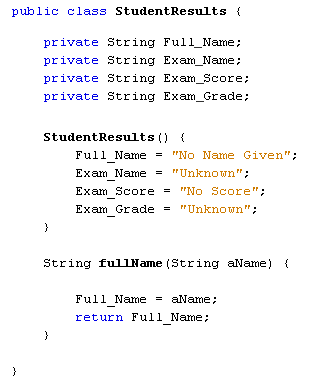
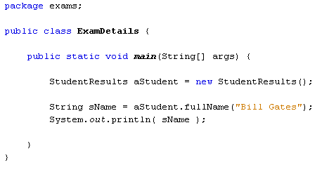
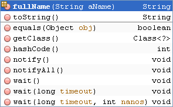
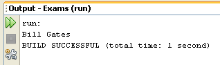
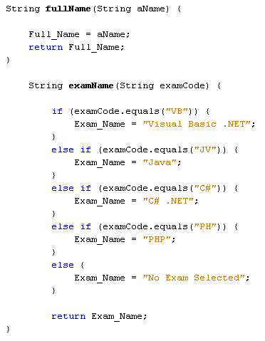
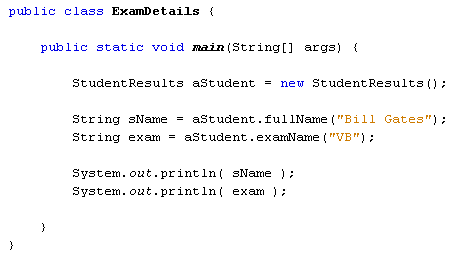
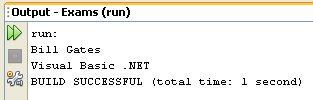

Accessing Class Variables
Java Classes: parts 1 2 3 4 5 6
Now that we have some default values, we can add a method that sets some different values for them. Add the following method to your StudentResults class:

This new method is called fullName, and has a String variable called aName between its round brackets. The method doesn't do a great deal, and is here for simplicity's sake. We could have had the method do more work, like checking it for errors, making sure it's proper case, checking for blank strings, etc. But the important point is that it sets a value for the Full_Name field, and returns this field as a value. When we call this method, it will overwrite the default value for Full_Name and insert a new value. Whatever is in the variable aName will be the new Full_Name value. Let's see it in action.
Click back to your ExamDetails class. Add the following two lines:
String sName = aStudent.fullName("Bill Gates");
System.out.println( sName );
The code for your ExamDetails class should look like the one below:

What we're doing here is calling the fullName method of our aStudent object. We're handing over a value of "Bill Gates". This will then be the value for the Full_Name field. (It could have been checked for errors, amended, and then stored in the field.) The Full_Name value is then returned and stored in the variable sName.
Just like the methods we created in the previous section, though, our fullName method is on the NetBeans popup list. Notice that the constructor is not there, however:

Run your code to test it out. The Output window should display the following:

What we've done, then, is to set a value for a field variable in a class called StudentResults. We've then accessed that value and printed it out.
Let's now add a method that actually does something useful. What we'll do is to allow a user to enter a two letter exam code. We'll then pass those two letters over to a method that turns the two letters into an exam name. For example, if a user enters the letter "VB", the method will return the string "Visual Basic .NET". The longer string will be stored in the Exam_Name field variable.
Add the following code to your StudentResults class, just below your fullName method:

The examName method has a string variable called examCode between its round brackets. This string will be the two letters. The IF … ELSE IF lines check to see which two letters are in the string. If we find a match for the two letters then a longer exam title is placed into the Exam_Name field. If no match is found then the text will be "No Exam Selected".
Go back to your ExamDetails class and add the following line:
String exam = aStudent.examName("VB");
Again, we're just making a call to the method. We hand over to the two letters "VB". The method returns the value "Visual Basic .NET", and then stores it in the string variable we've called exam. Add a new print line and your code should look like this:

Run your code and the Output should be this:

We'll continue this lesson in the next part, as the page is getting a bit too long!